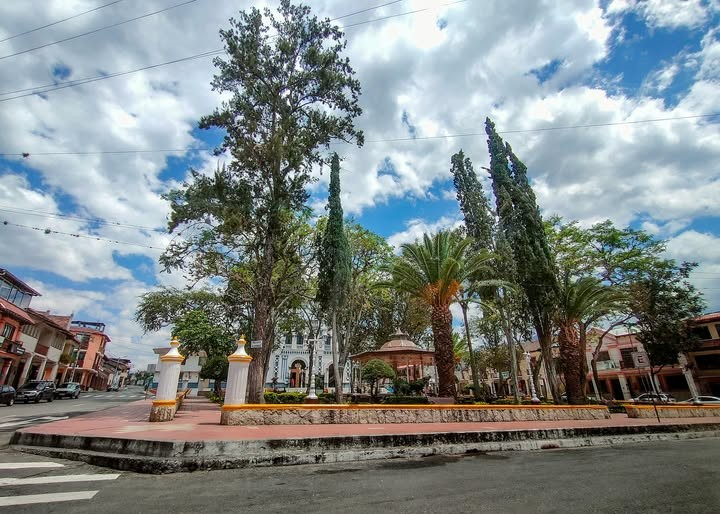
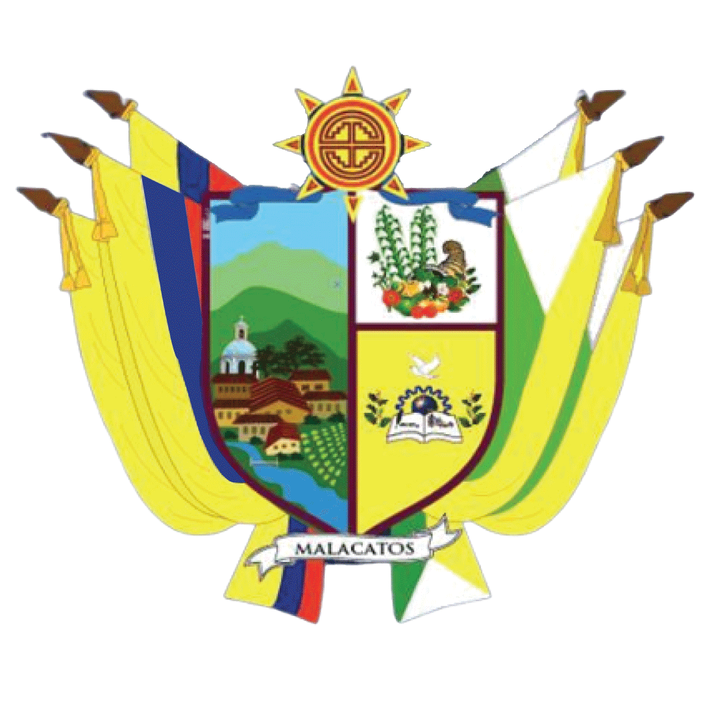
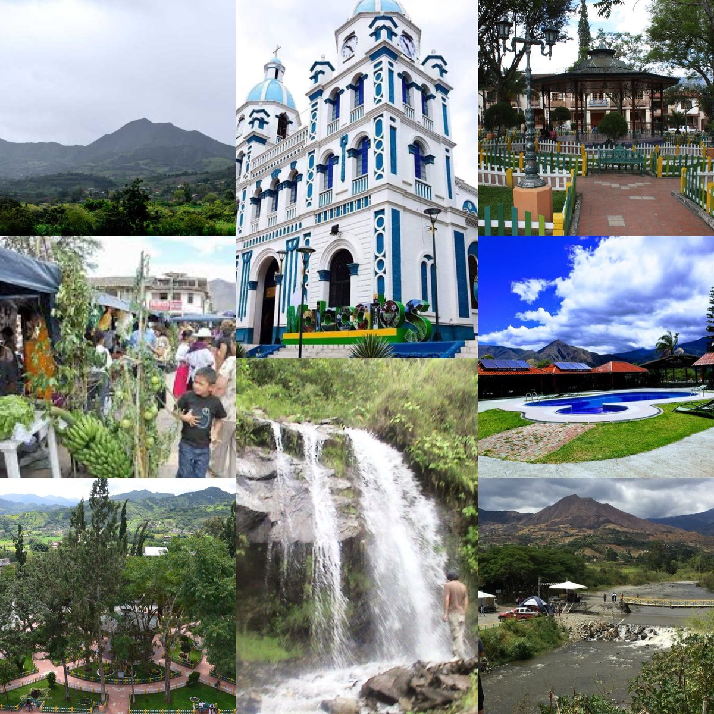

Bienvenidos a nuestra página
Malacatos: un rincón lleno de historia y vida
Ubicación
Explora información sobre nuestra unidad educativa y un cuento educativo especial.
Malacatos es una parroquia rural del cantón Loja, ubicada al sur del Ecuador, reconocida por su clima primaveral, su rica historia y su gente acogedora. Rodeada de montañas verdes y valles fértiles, Malacatos se ha consolidado como una zona productiva y de gran atractivo turístico dentro de la provincia de Loja.
Se encuentra a tan solo 30 minutos al sur de la ciudad de Loja, lo que la convierte en un lugar de fácil acceso para quienes buscan tranquilidad y belleza natural.
Esta parroquia es famosa por su producción de caña de azúcar, panela, café, frutas tropicales y especialmente por sus trapiches artesanales, que forman parte de la identidad cultural de la comunidad.
Además de su riqueza natural, Malacatos conserva una profunda tradición cultural y religiosa, donde sus festividades, su parque central y su iglesia representan la identidad de su gente.
Con una población aproximada de 7.000 habitantes, Malacatos es un lugar donde la naturaleza, la historia y la cultura se unen para ofrecer una experiencia auténtica.

LOS SÍMBOLOS DE LA PARROQUIA MALACATOS
El escudo representativo de la parroquia Malacatos refleja su riqueza natural, cultural y productiva.
En la parte superior se muestra un sol brillante que simboliza su clima primaveral durante todo el año, sobre un cielo azul que representa la paz y tranquilidad de la comunidad.
Al centro se destaca un trapiche artesanal junto a una rama de café y frutas tropicales, elementos que representan la producción agrícola tradicional del sector.
Un libro abierto representa el compromiso con la educación, mientras que un río simboliza la fertilidad de sus tierras.
La iglesia blanca representa la fe de su gente y las banderas del Ecuador y del cantón Loja fortalecen la identidad de esta parroquia.

TURISMO
Malacatos, una de las parroquias rurales más encantadoras del cantón Loja, se ha convertido en un destino turístico gracias a su clima primaveral, sus paisajes verdes y su gente acogedora.
Rodeado de montañas y atravesado por ríos cristalinos, este valle ofrece espacios ideales para el descanso, la aventura y el contacto con la naturaleza.
Entre sus atractivos destacan los trapiches artesanales, fincas productoras de café, senderos ecológicos, miradores naturales y balnearios de agua fresca.
Además conserva una fuerte identidad cultural y religiosa reflejada en sus festividades y tradiciones.
Visitar Malacatos significa descubrir un lugar donde la naturaleza, la cultura y la tranquilidad forman parte de una experiencia única.
